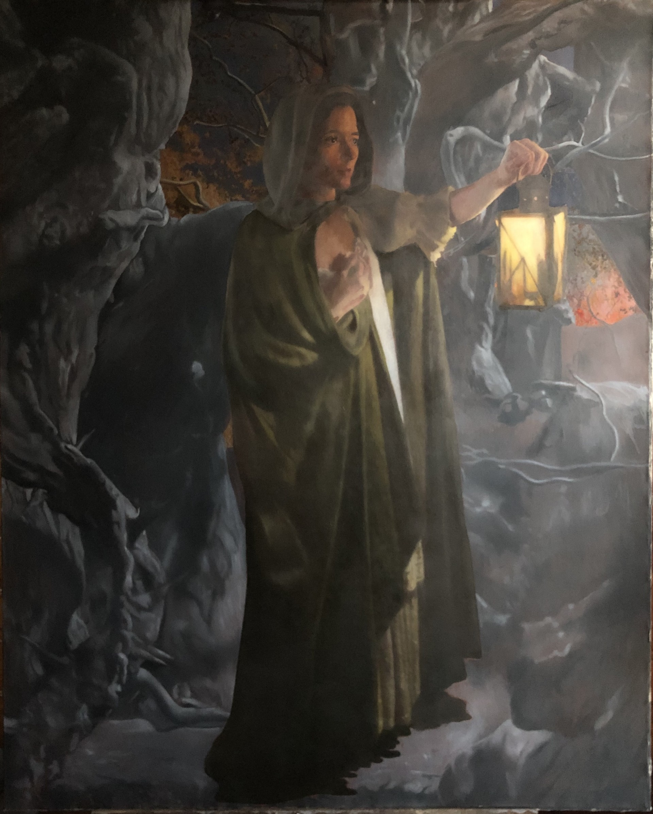
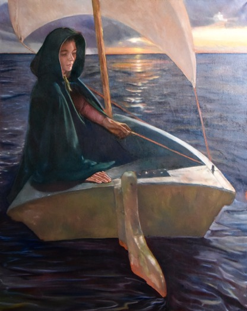
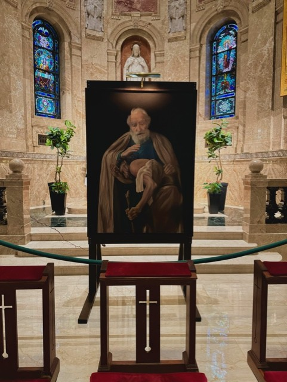
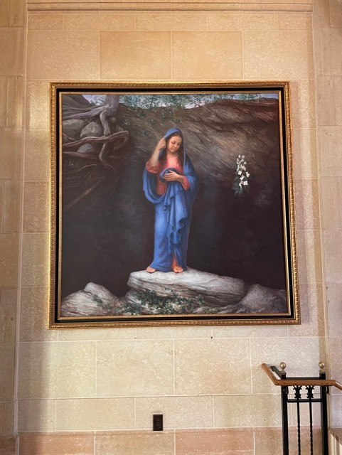
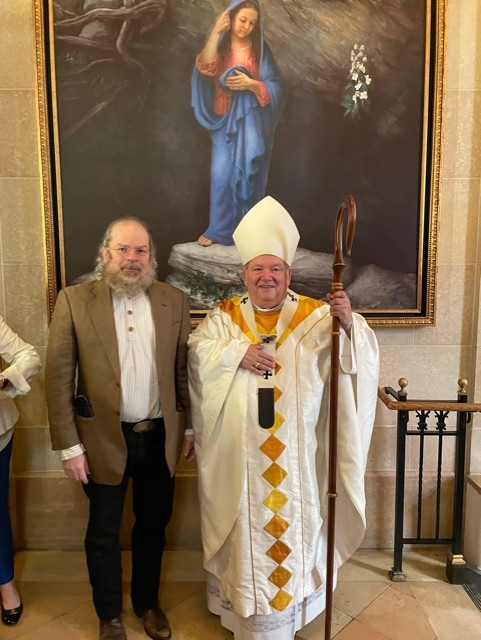
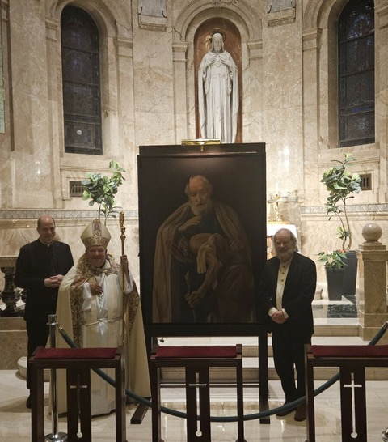
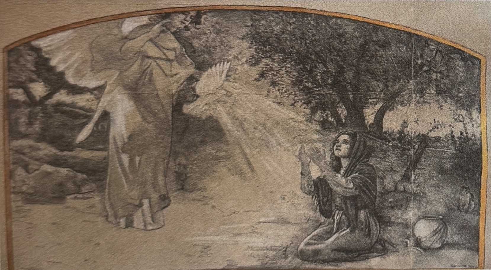
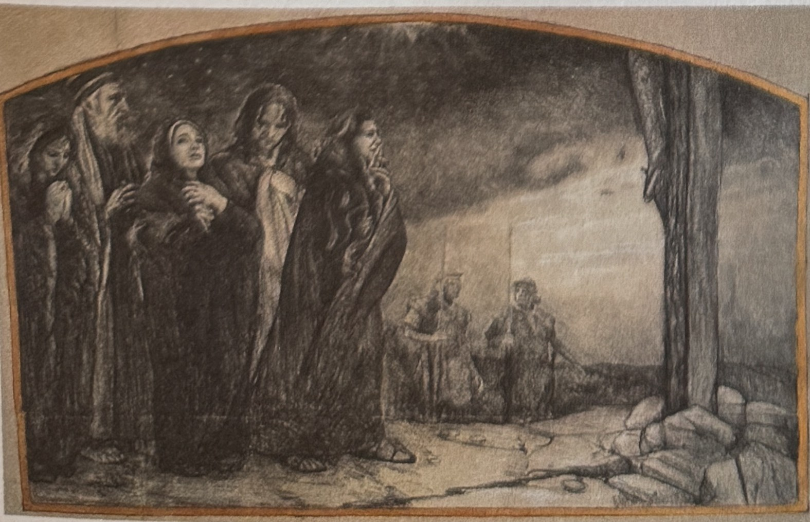
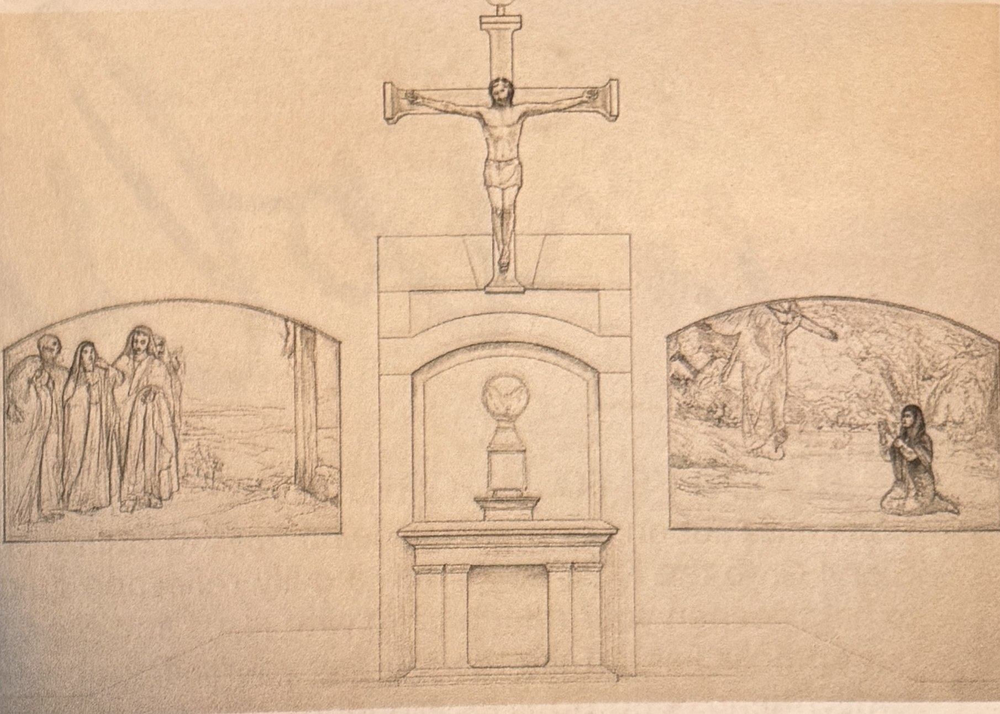

Buon fresco, oil, egg tempera and drawing, in the service of beauty, goodness and truth.







Created for the Basilica of St. Mary, Minneapolis and the Cathedral of Saint Paul, with Archbishop Hebda.





Two frescoes above the altar: The Annunciation and Mary at the Foot of the Cross, the second expected to be completed in November 2026.
In The Annunciation, Mary carries a water jar to the well. Painted into the fresco in July, blue and green ribbons, Annunciation School's colors, are tied around the jar as a permanent tribute to the Annunciation community in Minneapolis after the August 27 shooting that took the lives of Fletcher Merkel and Harper Moyski. As he painted them, Mark wrote the children's names on the cuff of his shirt. “They'll be on the fresco for centuries.”

Two site-specific frescoes for the sanctuary of Our Lady of Grace, June to November 2026: The Annunciation and Mary at the Foot of the Cross, flanking the altar crucifix.



“In a world often marked by noise, distraction, and impermanence, sacred beauty reminds us that God is still present among us.”Our Lady of Grace parish bulletin, May 17, 2026
A cycle of ten panels, each 15 × 20 ft. Three of the ten are completed. Next: Ruth and Naomi, planned for next year.